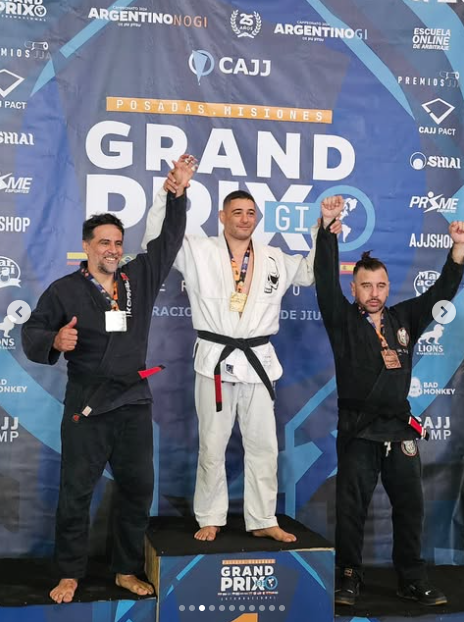
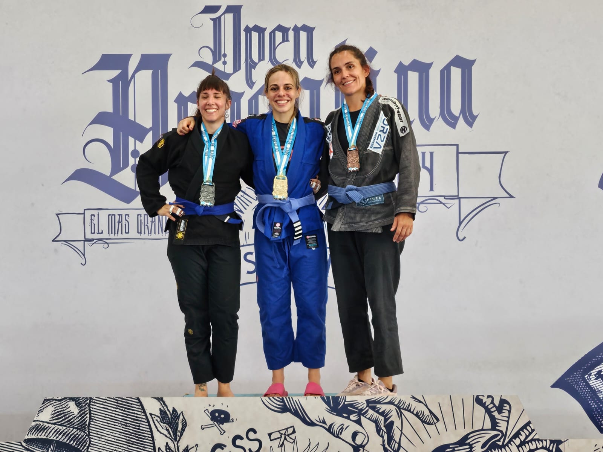
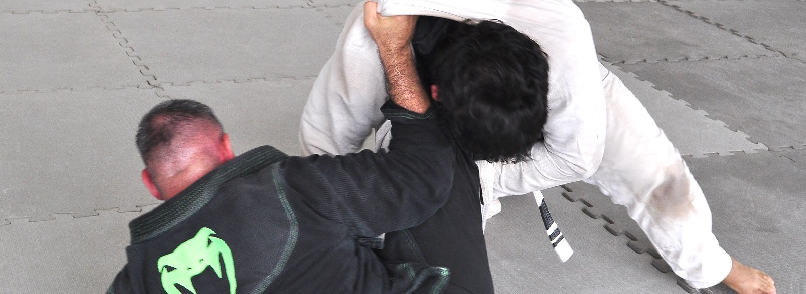

CINTURÓN NEGROFUNDADOR · PROFESOR PRINCIPALPablo Ricardo
PZPablo Ricardo
Zylberman
Fundador y profesor principal. Campeón argentino, con una trayectoria dedicada a la competencia y la enseñanza.
 PZ TEAM
Consultar clases ↗
PZ TEAM
Consultar clases ↗
BRAZILIAN JIU-JITSU · POSADAS
Técnica, disciplina y equipo. Un lugar para empezar desde cero y superarte en cada entrenamiento.
Fundado en 2023, PZ Team es una academia de Brazilian Jiu-Jitsu en Posadas, creada para difundir este arte marcial y ofrecer un espacio de entrenamiento serio e inclusivo.
Entrenamos con disciplina y respeto, combinando técnica y preparación física en un ambiente donde principiantes y avanzados pueden crecer a su ritmo.
Encontrá tu clase ⟶Distintas formas de aprender. La misma pasión por el Jiu-Jitsu.
 01 / GI
01 / GITécnica, control y estrategia en la modalidad tradicional.
↗ 02 / NO-GI
02 / NO-GIUn juego dinámico de velocidad y control corporal.
↗ 03 / KIDS
03 / KIDSDisciplina, respeto y desarrollo en un entorno seguro.
↗Enseñanza cercana, técnica y enfocada en el crecimiento de cada alumno.

CINTURÓN NEGROFundador y profesor principal. Campeón argentino, con una trayectoria dedicada a la competencia y la enseñanza.

CINTURÓN MARRÓNCampeona argentina y brasilera. Lidera Jiu-Jitsu Kids con una enseñanza cercana que impulsa confianza y valores.

Vení a conocer el dojo y consultanos qué clase se adapta mejor a vos.